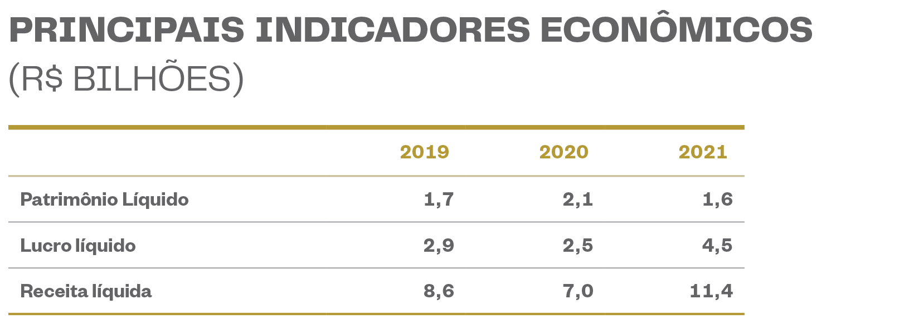

Perenidade do negócio
Política Integrada de Gestão
Vivemos em um ambiente cada vez mais complexo e interdependente em que mudanças profundas ocorrem aceleradamente. Por essa razão, nosso plano estratégico de negócios é definido com visão de longo prazo até 2030, mas, anualmente, fazemos sua revisão para adequar diretrizes, táticas e metas aos novos cenários com horizonte mais próximo.
Essa busca contínua pela adaptabilidade aos diferentes contextos de nossa atuação corporativa já está, inclusive, incorporada à nossa cultura organizacional – desde que todas as decisões e atividades da CBMM se mantenham em aderência ao nosso Código de Ética e Conduta, ao Nosso Compromisso (detalhado em Gestão de Pessoas) e à nossa Política Integrada de Gestão.
Integrando o conceito de gestão participativa, às perspectivas ambiental, saúde e segurança ocupacional, inovação, excelência em qualidade, além de ética e integridade, nossa Política Integrada de Gestão nos oferece os seguintes norteadores:
- Prover condições de trabalho seguras e saudáveis para a prevenção de incidentes, lesões e doenças ocupacionais nos processos do negócio;
- Gerenciar os perigos e riscos de segurança e saúde no trabalho e os aspectos e impactos ambientais por meio de práticas integradas e dinâmicas;
- Garantir a participação e a consulta dos colaboradores, prestadores de serviços e, quando aplicável, de seus representantes sobre assuntos relacionados à saúde e à segurança no trabalho;
- Proteger o meio ambiente com medidas de prevenção à poluição, atitudes sustentáveis e gestão de riscos e oportunidades decorrentes das nossas atividades, produtos e serviços;
- Elevar a satisfação dos clientes com atendimento a requisitos, inovações e soluções tecnológicas;
- Garantir a competência, a imparcialidade e a operação consistente de nossas atividades, produtos e serviços;
- Engajar as pessoas (colaboradores e prestadores de serviços) na gestão participativa e na atuação ética para o alcance de resultados;
- Atender a legislações e outros requisitos aplicáveis a suas atividades, produtos e serviços;
- Melhorar continuamente os Sistemas de Gestão, de modo a aumentar nosso desempenho e eficácia.
Resultados financeiros
Em 2021, a demanda global por produtos de nióbio foi restabelecida, quase retornando ao patamar anterior à pandemia da Covid-19. Beneficiados por essa retomada do consumo e pela variação cambial no Brasil, os resultados financeiros da CBMM foram positivos no período, atingindo receita líquida de R$ 11,4 bilhões (64% a mais do que no ano anterior, quando houve forte retração da demanda).
